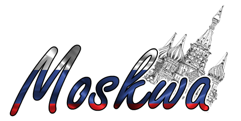
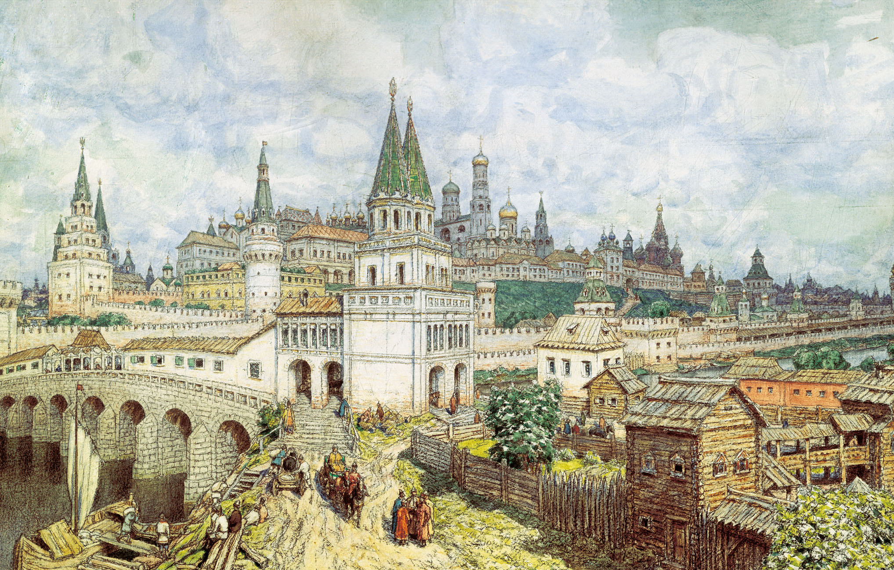
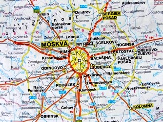
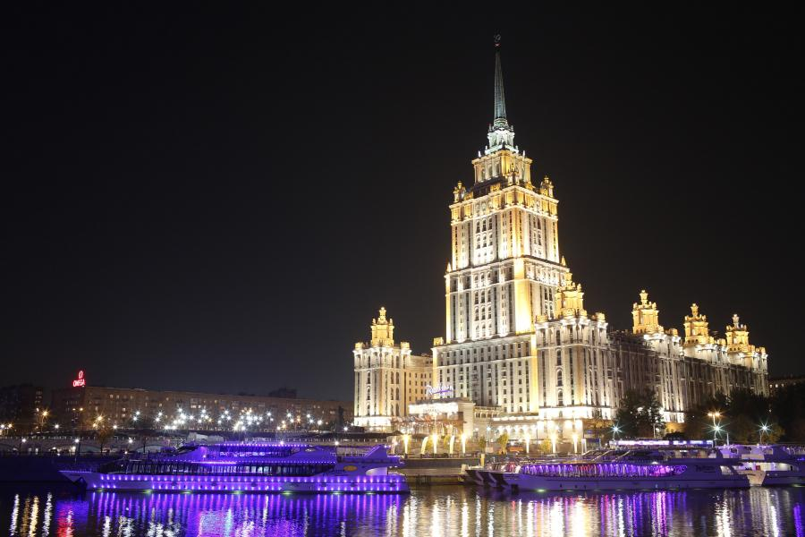
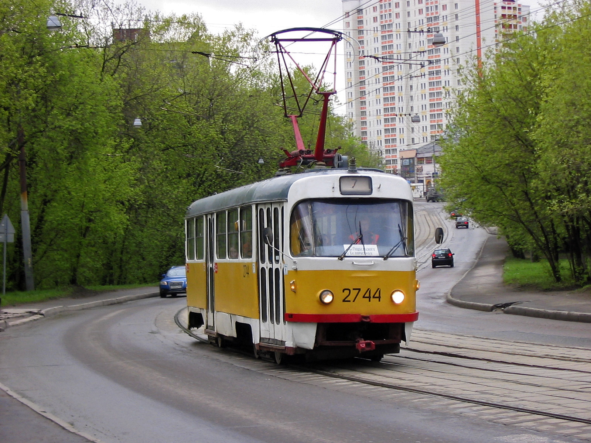

 Moskwa to stolica Rosji i największe jej miasto. Mieszka w niej 12,1 mln osób na obszarze 2511 km2. Jest siedzibą najwyższych władz państwowych Rosji. Jest jednym z największych ośrodków finansowych świata. Wygrywa w rankingach pod względem kosztów życia. Centrum miasta jest na Liście światowego dziedzictwa UNESCO.
Historia miasta  Założone około 1147 roku miasto przez Jurija Dołgorukiego szybko stało się ważnym ośrodkiem handlowym, czemu sprzyjało położenie nad rzeką Moskwą i połączenie, przez Wołgę, z Morzem Bałtyckim i Kaspijskim. Od XIII do XV wieku Moskwa znajdowała się pod kontrolą Tatarów, po wyparciu ich przez Iwana Groźnego stała się stolicą księstwa moskiewskiego, a później Wielkiego Księstwa Moskiewskiego. W 1712 roku car Piotr Wielki przeniósł stolicę Rosji do Petersburga, ale Moskwa pozostała ważnym centrum kulturalnym i gospodarczym. W XVIII i XIX wieku miasto doskonale prosperowało. Po rewolucji październikowej Moskwa odzyskała status stolicy. W 1610 roku miasto zdobyły wojska polskie, osadzając na tronie pretendenta do władzy carskiej, Dymitra zwanego Samozwańcem. Okupacja trwała jednak zaledwie dwa lata, idea unii Rzeczpospolitej z Rosją upadla, wojska polskie opuściły Kreml. Od XVIII do XX wieku miastu tylko dwukrotnie zagrażał atak obcych wojsk. 7 września 1812 roku Napoleon Bonaparte na czele swej wielonarodowej armii pokonał wojska rosyjskie pod wsią Borodino nieopodal Moskwy. Co najmniej 44 tysiące Rosjan poległo, odniosło rany lub dostało się do niewoli, pozostali zostali zmuszeni do odwrotu. Droga na Moskwę stała otworem. Większość mieszkańców stolicy uciekła na wschód, a opustoszałe miasto podpalono. Napoleon zajął ocalały Kreml, ale w zgliszczach nie znalazł spodziewanych łupów i jedzenia, które miały podreperować stan i morale zmęczonej armii. Po miesiącu cesarz Francuzów podjął decyzję o odwrocie. W czasie drugiej wojny światowej, nazywanej przez radzieckich historyków Wielką Wojną Ojczyźnianą, Niemcy oblegali Moskwę od października do grudnia 1941 roku, podchodząc na odległość 40 kilometrów od centrum miasta. Stolicę uratowały mroźna rosyjska zima i desperackie kontruderzenie Armii Czerwonej. Do góry Warunki geograficzne w mieście  Moskwa położona jest nad rzeką Moskwą w Europie Wschodniej, na pograniczu Grzędy Smoleńsko-Moskiewskiej, Równiny Moskiewsko-Ockiej i Niziny Mieszczorskiej. W Moskwie panuje klimat kontynentalny wilgotny z krótkim, ciepłym latem i długą, mroźną zimą; średnia temperatura w lipcu wynosi +19,2 °C, a w styczniu -6,5 °C. Roczna suma opadów wynosi 600–800 mm z maksimum w okresie letnim. Do góry Zabytki  Cerkiew Wasyla Błogosławionego - zbudowana w latach 1555–1561 przez cara Iwana Groźnego miała upamiętniać zwycięstwo w wojnie z kazańskimi Tatarami i zdobycie ich stolicy – miasta Kazań. Za jego autora uważa się pskowskiego mistrza Postnika Jakowlewa, zwanego Barmą. Według niektórych historyków w budowie brali udział włoscy mistrzowie, tworząc szczególne połączenie tradycyjnej słowiańskiej architektury i europejskiego stylu epoki Odrodzenia. Sobór poświęcono Opiece Matki Bożej, co wiązało się ze świętem, które przypadło w dniu rozpoczęcia się oblężenia Kazania. Powszechnie jednak używa się wezwania Wasyla Błogosławionego – nawiedzonego mnicha, którego doczesne szczątki złożono do świątyni
Do góry Atrakcje
W Moskwie można odwiedzić:

Do góry Transport  W skład naziemnej komunikacji miejskiej wchodzi sieć linii tramwajowych, autobusowych i trolejbusowych, uzupełnianych przez mikrobusy znane jako Marszrutki. Ważnym środkiem transportu w Moskwie jest metro, składające się z 182 stacji, 12 linii i torowiska o łącznej długości 301,2 km. Do góryCeny W Rosji obowiązują ruble.
Do góry |
{kind=link}
{kind=link}
{kind=link}